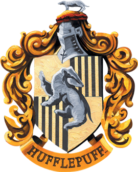

Opiekun domu:
Barwy:
Zwierzę z herbu:
Założyciel:
Mieszkańcy:
Relikwia założyciela:
Duch domu:
Wejście:
Miejsce:
Cenione cechy charakteru:
Pomona Sprout
Żółć i czerń
Borsuk
Helga Hufflepuff
Puchoni
Czarka Helgi Hufflepuff
Gruby Mnich
za obrazem martwej natury, obok kuchni
w piwnicach Hogwartu, niedaleko kuchni
wierność, sprawiedliwość, pracowitość, cierpliwosć